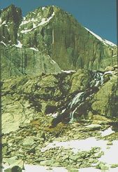

 The pinnacle of climbing in Rocky Mountain National Park, the Diamond starts at 13,100 feet and rises nearly 1000 vertical feet to the upper slopes of Longs Peak. The left side of the Diamond offers several different routes, none easier than 5.10 (extreme difficulty.) The right half of the Diamond is primarily used by aid climbers. Due to the strenuous nature of the Diamond, all participants will have to pass a physical examination and climbing evaluation.